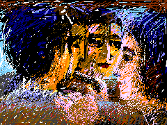
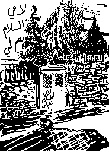

I have never seen anyone with blacker hair -- deep, almost blue, like the zenith at midnight. As he drove us we exchanged remarks lightly and, being Palestinian, quiet naturally reached the subject on every one's mind -- Israeli destruction of Palestinian Arab society. He said that we will outnumber them and my statistician sister added, yes, and soon within a generation. As he turned his face to catch a lightning glimpse of who we were I saw his sparkling features dance with sincere intensity. Then he said that we will endure and outlast them. He said that we can deal with want and pain, we know how to live on less, and we can make-do. There were a few seconds of quiet. He then added by way of contrast that they are soft with privilege. This land will yet be ours again and we will be free he said. His anger was beautiful and his formulations optimistic.

Behind his head through the windshield on a distant wall I read the following graffiti: "There is no kindness for me in this Peace Agreement."
Copyright: Samia A. Halaby, 1999, all rights reserved. To request permission to reproduce any part of these words or pictures please write to samia@interport.com
Select from the following menu representing the entire studio:
My Grandmother... The Town of Beisan... The Arab City of Jerusalem... Sabah Told Me... My Home in Yafa... Khader Told Me... Our Students... A Taxi Ride in Bethlehem... Written by Doctor Fathihe Saudi... Hasan Told Me... A Visit to Kafr Qasem... The Artist of Kafr Qasem... The Massacre at Kafr Qasem (not yet ready)
Tayseer Barakat, painter... Rana Bishara, painter and installation artist... Sari Khouri, painter... Abdel Tamam, painter... Vera Tamari, ceramist and painter... Adnan Yahya, painter and graphic artists...